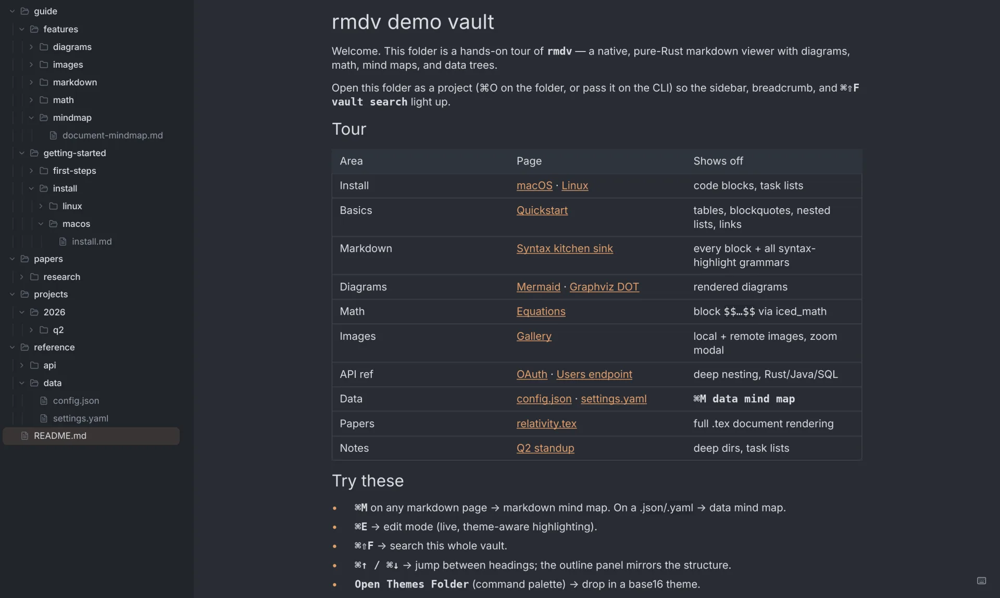

$rmdv README.md
Markdown, rendered
at native speed.
rmdv is a free, open-source markdown viewer written in Rust. No Electron, no webview, no JS runtime — just a ~30 MB binary that paints before your fonts finish loading.

## Why rmdv
For reading folders of .md files without spinning up Obsidian's vault,
Typora's editor weight, or a static-site build. Open a folder. Read.
| rmdv | Marky | Marked 2 | Glow | Obsidian | Typora | |
|---|---|---|---|---|---|---|
| Free | ✓ | ✓ | $14 | ✓ | freemium | $15 |
| Open source | ✓ | ✓ | — | ✓ | — | — |
| Native, no webview | ✓ | Tauri | ✓ | ✓ | — | partial |
| Windows | ✓ | — | — | ✓ | ✓ | ✓ |
| Folder workspace | ✓ | ✓ | — | — | ✓ | — |
| Read-only focus | ✓ | ✓ | ✓ | ✓ | — | — |
| Agent-controllable (IPC) | ✓ | — | — | — | — | — |
## Rust-fast, measurably
(was 453 MB)
Measured on an M2 MacBook Air (16 GB), median of 5 runs. Numbers, methodology, and how to reproduce: docs/benchmarks.md. The renderer is viewport-aware — only visible blocks become widgets, so memory stays flat no matter how long the document grows.
## Features
Reading & rendering
Navigation & ops
## Keyboard-first
Everything reachable without the mouse. The scroll keys work on this page — try them.
## Built for coding agents
rmdv is single-instance with an IPC socket. Claude Code, Codex, or any agent can drive the window the human is reading — open files, jump to sections, switch view modes — without touching the keyboard.
# open a file at a specific line
rmdv path/to/spec.md --line 42
# navigate the running instance
rmdv goto --section "API/Authentication"
rmdv mode mindmap
rmdv current # prints JSON state
# stateless — no window needed
rmdv list-sections spec.md | jq -r '.[].path'Every command returns one line of JSON. Your agent writes a doc, opens it at the right heading, and keeps working while you read.
rmdv is the only markdown viewer in this category with a stable IPC CLI: a single-instance process, a well-defined JSON protocol, and no GUI interaction required.
## FAQ
- Is rmdv free and open source?
- Yes. rmdv is MIT-licensed and free to use, modify, and distribute. Source code is at github.com/minchenlee/rmdv.
- How is rmdv different from Obsidian?
- rmdv is a read-focused viewer, not a note-linking knowledge base. It opens any folder instantly without vault setup, uses ~70 MB of memory on a 10,000-line document (versus 300+ MB for Obsidian), and starts in ~150 ms. It has no plugin ecosystem, but it renders Mermaid diagrams and LaTeX math natively — Obsidian requires plugins for both.
- How is rmdv different from Typora?
- Typora is a paid ($15) editor-first app for macOS and Windows. rmdv is free, open source, read-focused, and also runs on Linux. It renders Mermaid diagrams and LaTeX math without a webview; Typora uses an embedded browser for rendering.
- Does rmdv work offline?
- Yes. rmdv is a native desktop application with no cloud dependency. All rendering — Markdown, Mermaid diagrams, LaTeX math, mindmaps — happens locally with no network requests at runtime.
- What diagram and math formats does rmdv support?
- rmdv renders Mermaid diagrams (all major diagram types) and Graphviz DOT graphs natively in Rust. Block LaTeX math (
$$…$$) is rendered by a pure-Rust layout engine — no JavaScript, no KaTeX. - How does rmdv work with Claude Code or other AI coding agents?
- rmdv runs as a single instance with a Unix socket IPC interface. An agent uses the
rmdvCLI to open files, jump to specific headings, or switch view modes programmatically. Every command returns one line of JSON. The agent can keep a spec file open in rmdv at the exact section the human needs while continuing its own work. - How do I install rmdv?
- On macOS, download the signed and notarized .dmg from github.com/minchenlee/rmdv/releases. On Linux, download the x86_64 AppImage from the same page. To build from source on any platform including Windows: install Rust 1.80 or newer, then run
git clone https://github.com/minchenlee/rmdv && cd rmdv && cargo build --release. - Is rmdv faster than Electron-based markdown viewers?
- rmdv is a ~30 MB native binary with no Electron, no webview, and no JavaScript runtime. Cold start to first paint is ~150 ms on an M2 MacBook Air. A 10,000-line document parses in 8.1 ms and uses 70 MB of memory. Electron-based apps typically start in 1–3 seconds and use significantly more memory.
## Install
From source
git clone https://github.com/minchenlee/rmdv
cd rmdv && cargo build --releaseRust 1.80+. Windows builds this way too.